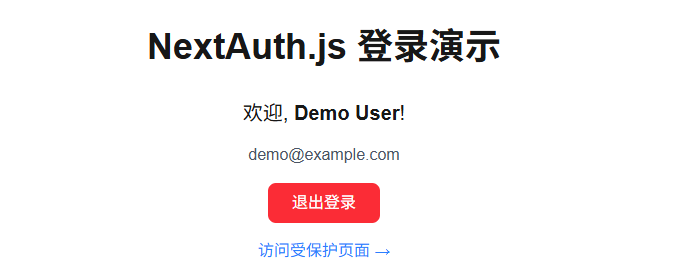

我现在，几乎每天都在使用 Claude code 不管是个人项目，还是公司的项目
但是，对于新手在让 Claude code 写项目的时候经常
写出的不符合自己预期，一堆的屎山代码 没有测试代码，无从进行测试 一运行全是 error，它无法修复，你自己也无法修复
为什么？
因为对于目前的vibe coding，你要明白一件事：
“ai 不是“理解需求”，而是“执行规格”
因此，你要做的是：
限定技术栈 限定目录结构 限定实现边界 限定第一阶段要完成的任务 ……
因此，一上来就让Claude来帮你实现项目，往往是达不到想要的结果
前期就需要我们人类辅助来完成一些必要的工作，比如PRD,架构，路由，技术栈等
你不能想对人一样模糊描述，而是要把你前面这些工作压缩成一份可执行的指令集
这个工作看起来简单，其实对于大部分人来讲还是有一定的门槛的
今天就为大伙推荐一个工具：Superpowers
Superpowers：Claude Code 的「工程化大脑」插件
Superpowers 是 Claude Code 专属的核心工作流规范插件。
其核心价值是通过强制结构化工作流、引入软件工程最佳实践，解决 AI 编码“跳过步骤、遗漏文件、质量不可控”的痛点
让 Claude Code 从“快速生成代码”升级为“工程化交付”，具备类似高级架构师的全局规划与规范执行能力。
一、核心定位与解决的核心痛点
1. 本质定位
它不是新的大语言模型，而是一套为 Claude Code 设计的 “工作流约束与增强库”，属于 Anthropic 「Agent Skills」生态的核心组件。
通过预定义的技能、命令和流程，强制 AI 在编码前、编码中、编码后遵守软件工程规范，避免“想写就写”的随意性。
2. 解决的 AI 编码痛点
AI 原生编码常存在以下问题，而 Superpowers 针对性解决：
无规划直接编码：接到需求后跳过“需求拆解、文件梳理”，直接写代码导致遗漏边缘场景（如迁移项目时漏掉关键 API 文件）； 测试缺失：只写业务逻辑，不写测试用例，运行后报错率高，后期维护成“屎山”； 上下文丢失：长会话因 token 限制丢失进度，无法跨会话延续项目状态； 无回滚机制：修改出错后无明确恢复方案，只能反复试错。
二、核心功能：三大命令 + 四大技能库
Superpowers 的功能围绕“先规划、再编码、强验证”的工程化流程设计，核心通过「命令触发」和「技能自动加载」实现。
1. 三大核心斜杠命令（高频使用）
命令需在 Claude Code 会话中直接输入，触发对应工作流，每一步均有强制检查逻辑，无法跳过：
/superpowers:brainstorm：需求拆解与想法打磨
/superpowers:write-plan：生成精细化实施计划
/superpowers:execute-plan：批量执行计划 + 检查点验证
2. 四大强制规范技能库
技能会在 Claude Code 匹配任务场景时自动加载（无需手动触发），强制 AI 遵守特定开发规范，阻止“走捷径”：
test-driven-development（TDD）：测试规范
systematic-debugging：调试规范
verification-before-completion：交付规范
session-context-injection：上下文管理
三、从“加载”到“交付”的全流程管控
Superpowers 通过“自动加载 + 强制校验 + 文件持久化”实现全流程管控，无需用户手动干预规范执行：
启动加载：我们可以在项目
CLAUDE.md中配置“会话启动自动加载”，避免每次手动触发：# 项目设置
使用 Superpowers MCP 进行所有开发工作。在会话开始时加载它。启动后，Claude Code 会提示“Superpowers (Core) 技能已加载”。
场景匹配：当我们提出一个需求时（如“帮我开发一个 Next.js 16 的用户登录接口”），插件自动匹配对应技能（如 TDD、systematic-debugging），无需手动选择。
步骤强制：若 AI 试图跳过步骤（如“不写计划直接编码”“不测试直接交付”），插件会直接报错并阻断，提示“请先完成 [某步骤]（如生成 PLAN.md）”。
进度持久化：自动在本地生成规范文件结构（路径：
~/.config/superpowers/plans/[项目名]/），确保进度不丢失：~/.config/superpowers/
└── plans/
└── nextjs-16-migration/ # 项目名
├── PLAN.md # 完整迁移路线图（含阶段、回滚方案）
├── progress.md # 当前完成状态（如“Phase 1 已完成 18/23 个文件”）
└── verification.md # 测试命令与成功标准（如“curl 命令、Lighthouse 指标”）
四、安装与基础使用
1. 安装
需先将 Superpowers 插件市场接入 Claude Code，再安装 Core 插件（仅支持 Claude Code 环境）：
执行一下命令安装插件市场
# 1. 添加插件市场
/plugin marketplace add obra/superpowers-marketplace

安装插件
# 2. 安装 Superpowers 插件
/plugin install superpowers@superpowers-marketplace
或通过 /plugin 选择安装

安装完成后，在 Installed 中就可以看到安装的插件

2. 示例演示
我们以实现一个Next.js 16 的用户登录接口为例
输入需求：如“帮我开发一个 Next.js 16 的用户登录接口”； 触发 brainstorm：输入 /superpowers:brainstorm，与 AI 确认技术栈（如“用 Prisma 还是 Mongoose？”）、接口参数（如“是否需要验证码”）；生成计划：输入 /superpowers:write-plan，获取包含“文件路径（如app/api/auth/login/route.ts）、测试命令（如POST /api/auth/login验证）”的 PLAN.md；执行计划：输入 /superpowers:execute-plan，AI 按步骤编码、运行测试，记录进度到 progress.md；交付验证：完成后自动运行 verification.md 中的命令，确认“接口返回 200、JWT 生成正常”，才算交付完成。
这里我们先让 superpowers 创建一个计划

superpowers 会让你回答几个问题来搜集信息

收集完信息开始编写计划文档

最终将登录功能拆解为9个任务

期间，如果对哪里不满意，我们也可以修改这个计划
我们选择使用子代理的方式来执行计划

剩下的就不用管了，Superpowers 会为每个任务派发一个代理来执行任务

每个 Task 完成后，superpowers 会进行代码审查

我们启动测试看看（前端可以先忽略），填入我们的测试凭证

登录没有问题

如果是没有登录的情况下，访问受保护页面，自动跳到了登录页面

Superpowers 不是“提升 AI 编码速度”的工具，而是“提升 AI 编码质量与可控性”的“约束器”。
这或许正是 AI 编程从“快速生成”走向“工程化交付”的关键一步
这对于需要长期维护、高质量交付的 AI 辅助开发项目，非常重要！！
七、支持与资源
官方仓库：https://github.com/obra/superpowers 文档参考：安装后可通过 Claude Code 输入 /superpowers:help获取内置文档，或查看 PLAN.md 生成的示例。
💡推荐阅读
如果你也想使用 Claude，但是不想支付高额的费用，不想承担封号风险……
推荐你试一下我们的一站式Vibe Coding平台，一次订阅同时享受claude code / codex / gemini
详细介绍及付费兑换，后台回复：cc 查看
或+v：afly813 咨询
目前我们的 AI CODE 平台已支持 claude code 、codex、Gemini，想体验最强最前沿的 AI 编程，冲就完事了！！🚀
伙伴们，以后写代码，codex和claude都可以爽yy啦！！！
让你的 Claude Code 效率飞起！你只差这个万能公式！！
这才是 AI 编程的最强组合，VSCode + Claude Code 让写代码快到飞起！
【附提示词模板】10个 Claude code 高频提示词模板（可直接复制使用）!建议收藏！！
我们的ChatGPT充值服务也已上线，点击文末【阅读原文】查看详情！
喜欢的话❤，欢迎点赞、关注一波，后续会持续为大伙分享 工作流、 AI编程等实战干货，让我们一起学 AI！